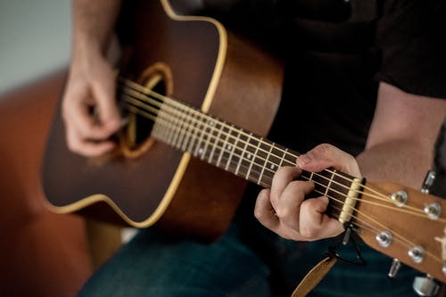

About
.jpeg)
I like to play the guitar as i enjoy playing it.The guitar is a string instrument which is played by plucking the strings. The main parts of a guitar are the body, the fretboard, the headstock and the strings. Guitars are usually made from wood or plastic. Their strings are made of steel or nylon.The first guitars are thought to have originated during the 15th Century in Spain. These had four 'courses' of strings or sets of two strings tuned to the same note to give the guitar resonance. However the Lute was consistently favored by the public over the Guitar until the end of the 15th Century.The majority of material comprising a modern guitar is wood. Typical woods used for the body and neck of a guitar today are Mahogany, Ash, Maple, Basswood, Agathis, Alder, Poplar, Walnut, Spruce, and holly. Woods from around the world are also incorporated into modern acoustic and electric guitars.Classical, Acoustic and Electric. Here are some videos so you can hear the 3 different types: There are 3 basic types of guitar. Classical, Acoustic and Electric.

Reviews
The main parts of a guitar are the body, the fretboard, the headstock and the strings. Guitars are usually made from wood or plastic. Their strings are made of steel or nylon.The first guitars are thought to have originated during the 15th Century in Spain. These had four 'courses' of strings or sets of two strings tuned to the same note to give the guitar resonance. However the Lute was consistently favored by the public over the Guitar until the end of the 15th Century.The majority of material comprising a modern guitar is wood. Typical woods used for the body and neck of a guitar today are Mahogany, Ash, Maple, Basswood, Agathis, Alder, Poplar, Walnut, Spruce, and holly. Woods from around the world are also incorporated into modern acoustic and electric guitars.Classical, Acoustic and Electric. Here are some videos so you can hear the 3 different types: There are 3 basic types of guitar. Classical, Acoustic and Electric.
Josh A is my favourite singer.He has composed a lot of songs, some that did really well while some did not.Some of the songs he has composed are Fearless,Pain and many more.He frequently collaborates with artists such as Jake Hill and his best friend Darko, also known as Foti.
Inspiration
.jpeg)
My inspiration is the weeknd.